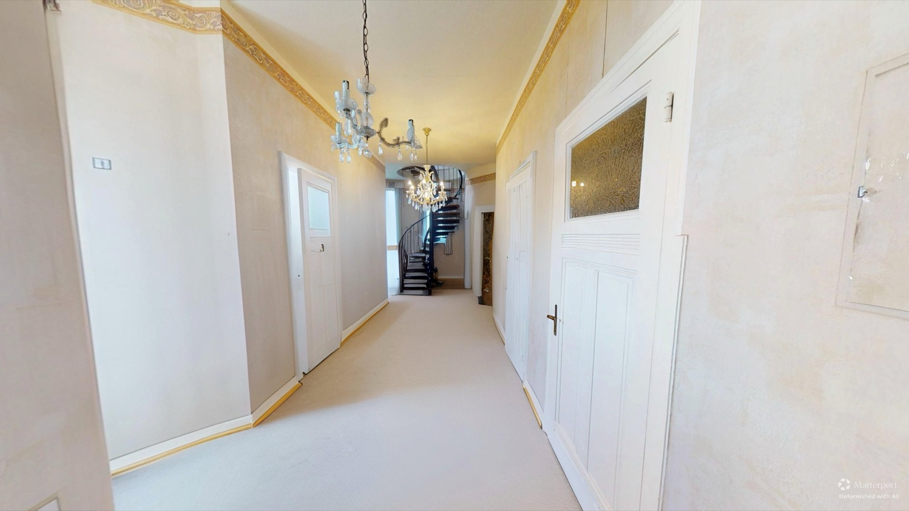
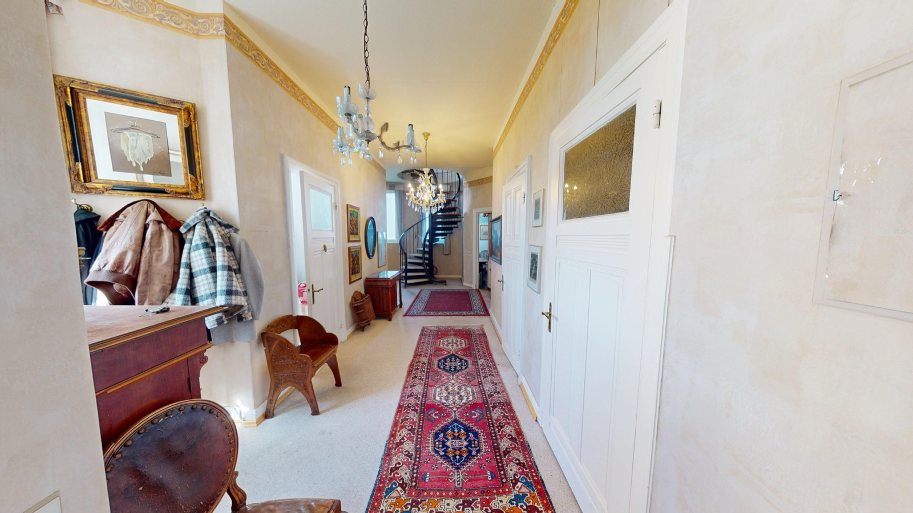

Vor dem Besuch erkunden
Gäste und Interessenten verschaffen sich vorab einen echten Eindruck und buchen oder kommen mit mehr Vertrauen.
Professionelle 360°-Rundgänge inkl. hochwertiger 4K-Bilder – für Gastronomie, Immobilien und Gewerbe im Großraum Hamburg.
Eine virtuelle Tour ist ein interaktiver 360°-Rundgang, durch den sich Besucher frei bewegen – am Desktop, auf dem Handy oder direkt bei Google. So überzeugt deine Location rund um die Uhr.
Gäste und Interessenten verschaffen sich vorab einen echten Eindruck und buchen oder kommen mit mehr Vertrauen.
Die Tour lässt sich in Google Maps & Street View einbinden – mehr Reichweite genau dort, wo gesucht wird.
Event- und Gastroflächen wirken im 3D-Rundgang lebendig und hochwertig – perfekt für Anfragen und Vermietung.
Ein moderner, interaktiver Auftritt hebt dich klar von Mitbewerbern mit gewöhnlichen Fotos ab.
Dreh dich mit Maus oder Finger durch den Raum – genau so wird deine Location direkt bei Google begehbar.
Jede Branche zeigt ihre Räume anders. Wähle deinen Bereich und sieh, wie ein 3D-Rundgang dort konkret wirkt.
Restaurants, Cafés & Bars – Atmosphäre, die Gäste vorab spüren.
Mehr erfahren →Säle, Suiten & Flächen – Anfragen ohne vorherige Besichtigung.
Mehr erfahren →Wohnungen & Häuser – Vorqualifizierung statt Besichtigungstourismus.
Mehr erfahren →Filialen, Praxen & Studios – Standort und Service transparent zeigen.
Mehr erfahren →Fitness, Sport & Erlebniswelten – Atmosphäre schon vor dem Besuch zeigen.
Mehr erfahren →Baudokumentation & As-Built – Baufortschritt remote festhalten.
Mehr erfahren →Studien zeigen deutlich: Wer Räume online begehbar macht, gewinnt mehr Aufmerksamkeit und mehr Anfragen.
Allgemeine Branchen-Statistiken (u. a. Google/Ipsos sowie Immobilien- und Marketing-Studien). Sie dienen der Einordnung und stellen keine garantierten Einzelergebnisse dar.
Du schilderst dein Objekt, ich melde mich mit Richtpreis und einem passenden Aufnahmetermin im Großraum Hamburg.
Ich scanne deine Räume mit Matterport in einem dichten Standpunkt-Raster und fotografiere alles in 4K.
Du bekommst den fertigen 3D-Rundgang zum Einbinden plus alle 4K-Bilder mit vollen Nutzungsrechten.
Auf Wunsch entferne ich Möbel und Deko aus deinen Aufnahmen. Ideal für Immobilien und Vermietung: Interessenten sehen den Raum neutral und können ihn sich selbst einrichten. Zieh den Regler und sieh den Unterschied.


Möbliert Leer · per KI entferntRegler ziehen oder mit den Pfeiltasten ← → verschieben
Aus jedem Matterport-Scan entstehen gestochen scharfe 4K-Bilder für Website, Google-Eintrag, Social Media und Speisekarte – mit vollen Nutzungsrechten.
Ein fairer All-in-Preis nach Fläche. Tour und hochwertige 4K-Bilder sind immer enthalten – ohne versteckte Kosten.
Ob Restaurant in Winterhude, Eventlocation in der HafenCity oder Gewerbe im Umland – ich bin im gesamten Großraum Hamburg für dich unterwegs. Die Anfahrt bis 30 km ist inklusive.
Alles aus einer Hand: der interaktive 3D-Rundgang und professionelle 4K-Fotos – persönlich, zuverlässig und auf den Punkt.
Der Preis richtet sich nach der Fläche. Eine komplette Matterport-Tour inklusive hochwertiger 4K-Bilder gibt es ab 430 € netto. Mit dem Preisrechner auf der Seite „Leistungen & Preise" erhältst du in Sekunden einen transparenten Richtpreis – ohne versteckte Kosten.
Eine virtuelle Tour ist ein interaktiver 360°-Rundgang, durch den sich Besucher frei am Computer oder Smartphone bewegen. Mit der Matterport-Technologie entstehen dabei ein begehbares 3D-Modell, ein Dollhouse-Ansicht, ein 2D-Grundriss und scharfe 4K-Fotos deiner Räume.
Besonders für Gastronomie (Restaurants, Cafés, Bars), Eventlocations, Hotels, Immobilien, Showrooms, Büros und Einzelhandel. Überall, wo Atmosphäre und Räume zählen, schafft ein virtueller Rundgang Vertrauen und mehr Anfragen.
Ja. Die virtuelle Tour lässt sich direkt in deinen Google-Unternehmenseintrag, in Google Maps & Street View sowie auf deiner Website einbinden – für mehr Sichtbarkeit genau dort, wo nach deinem Angebot gesucht wird.
Im gesamten Großraum Hamburg – von Winterhude und Eimsbüttel über die HafenCity bis ins Umland. Die Anfahrt bis 30 km ist im Preis enthalten. Auf Anfrage sind auch Aufnahmen in der weiteren Metropolregion möglich.
Ja. Alle 4K-Fotos aus der Tour erhältst du mit vollen Nutzungsrechten – für Website, Google, Social Media, Speisekarte oder Print. Die Bilder sind immer im Paket enthalten.
Sende mir unverbindlich dein Objekt – du erhältst zeitnah einen Richtpreis und einen Terminvorschlag.
Jetzt unverbindlich anfragen